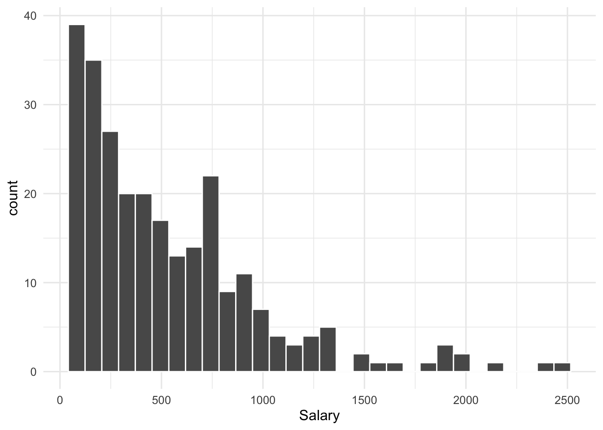
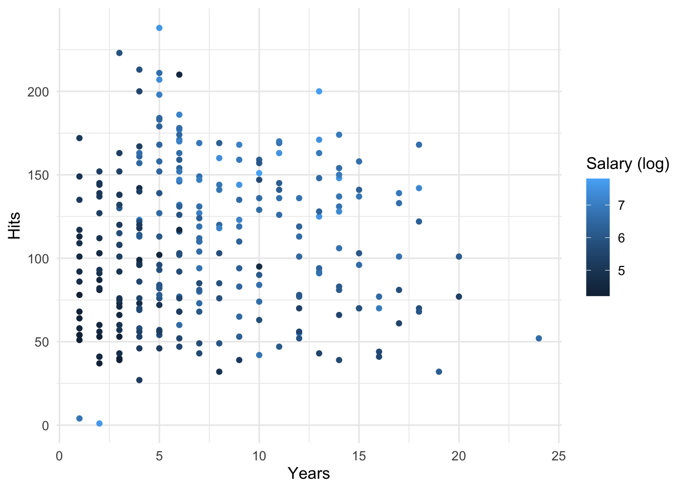

Lesson 6
Tree-based Models
Learning Objectives
After this lesson, students will be able to:
Define decision tree and understand the splitting algorithm for tree-based regression and classification.
Define the concepts of bagging, boosting, and random forests.
Use the
tidymodelsworkflow to fit and tune various tree-based models.
Readings, etc.
For this lesson, refer to the following readings, etc.:
Read chapter 8 from of An Introduction to Statistical Learning (Tibshirani, James, and Trevor 2017). You may also want to read chapter 8 of Statistical Learning with Math and R (Suzuki 2020).
Watch the corresponding video lecture on decision trees. View on YouTube.
Go through the following two blog posts by Julia Silge:
Overview
Tree-based models are a class of nonparametric algorithms that work by partitioning the feature space, that is, the predictors into a number of smaller (non-overlapping) regions with similar response values using a set of splitting rules. Predictions are obtained by averaging response values in each region. Such divide-and-conquer methods can produce simple rules that are easy to interpret and visualize. However, simple decision trees typically lack in predictive performance compared to more complex algorithms. In order to address this, techniques such as bagging, boosting, and random forests have been developed. Each of these approaches involve fitting multiple trees which are combined in some way that results in improved accuracy but at a cost of some loss in interpretability.
Basic Decision Trees
Motivating Example
To motivate decision trees, let’s consider a regression problem. The Hitters data from the ISLR2 package contains data on major league baseball players. We would like to use this data to predict player salaries based on information about the players and their performance. Let’s start by getting a glimpse of the data.
Rows: 322
Columns: 20
$ AtBat <int> 293, 315, 479, 496, 321, 594, 185, 298, 323, 401, 574, 202, …
$ Hits <int> 66, 81, 130, 141, 87, 169, 37, 73, 81, 92, 159, 53, 113, 60,…
$ HmRun <int> 1, 7, 18, 20, 10, 4, 1, 0, 6, 17, 21, 4, 13, 0, 7, 3, 20, 2,…
$ Runs <int> 30, 24, 66, 65, 39, 74, 23, 24, 26, 49, 107, 31, 48, 30, 29,…
$ RBI <int> 29, 38, 72, 78, 42, 51, 8, 24, 32, 66, 75, 26, 61, 11, 27, 1…
$ Walks <int> 14, 39, 76, 37, 30, 35, 21, 7, 8, 65, 59, 27, 47, 22, 30, 11…
$ Years <int> 1, 14, 3, 11, 2, 11, 2, 3, 2, 13, 10, 9, 4, 6, 13, 3, 15, 5,…
$ CAtBat <int> 293, 3449, 1624, 5628, 396, 4408, 214, 509, 341, 5206, 4631,…
$ CHits <int> 66, 835, 457, 1575, 101, 1133, 42, 108, 86, 1332, 1300, 467,…
$ CHmRun <int> 1, 69, 63, 225, 12, 19, 1, 0, 6, 253, 90, 15, 41, 4, 36, 3, …
$ CRuns <int> 30, 321, 224, 828, 48, 501, 30, 41, 32, 784, 702, 192, 205, …
$ CRBI <int> 29, 414, 266, 838, 46, 336, 9, 37, 34, 890, 504, 186, 204, 1…
$ CWalks <int> 14, 375, 263, 354, 33, 194, 24, 12, 8, 866, 488, 161, 203, 2…
$ League <fct> A, N, A, N, N, A, N, A, N, A, A, N, N, A, N, A, N, A, A, N, …
$ Division <fct> E, W, W, E, E, W, E, W, W, E, E, W, E, E, E, W, W, W, W, W, …
$ PutOuts <int> 446, 632, 880, 200, 805, 282, 76, 121, 143, 0, 238, 304, 211…
$ Assists <int> 33, 43, 82, 11, 40, 421, 127, 283, 290, 0, 445, 45, 11, 151,…
$ Errors <int> 20, 10, 14, 3, 4, 25, 7, 9, 19, 0, 22, 11, 7, 6, 8, 0, 10, 1…
$ Salary <dbl> NA, 475.000, 480.000, 500.000, 91.500, 750.000, 70.000, 100.…
$ NewLeague <fct> A, N, A, N, N, A, A, A, N, A, A, N, N, A, N, A, N, A, A, N, …We see that there are some missing values for the Salary response variable so let’s remove the rows with the missing observations.
Hitters <- Hitters %>%
filter(!is.na(Salary))Let’s also look at the distribution for Salary.
Code
Hitters %>%
ggplot(aes(x=Salary)) +
geom_histogram(color="white")
Hitters data set from the ISLR2 package.Since the data is skewed, we should \(\log\) transform the response variable.
Code
Hitters <- Hitters %>%
mutate(Salary_log = log(Salary))
Hitters %>%
ggplot(aes(x=Salary_log)) +
geom_histogram(color="white") +
labs(x = "Salary (log)")
Hitters data set from the ISLR2 package.For illustrative purposes, let’s suppose we want to model the \(\log\) scaled salary as a response to the predictor variables Hits which records the number of by the player in their most recent year of play and Years which is the numbe of years the player has played. We first examine a plot of the relationship between these variables.
Code
Hitters %>%
ggplot(aes(x = Years, y = Hits, color=Salary_log)) +
geom_point() +
labs(color = "Salary (log)")
Hitters data set from the ISLR2 package.For this problem, the basic decision tree algorithm for regression will separate the Years-Hits predictor or feature space (in this case the plane) into some number of distinct regions and then make predictions by averaging the \(\log\) scaled salary values in each of the regions.
The question is, how to we divide up the predictor space?
Basic Decison Tree Regerssion Algorithm
To build a regression tree, there are two basic steps:
Divide the predicor space. Suppose there are \(p\) predictors so that \({\bf x} = (x_{1}, x_{2}, \ldots , x_{p})\). For the set of all possible predictor values, divide this up into \(J\) non-overlapping regions, \(R_{1}, R_{2}, \ldots ,R_{J}\).
Fo revery observation that falls into region \(R_{j}\) we make the same prediction, which is simply the mean of the response values for the training observations in \(R_{j}\).
The question is, how do we construct the regions \(R_{1}, R_{2}, \ldots ,R_{J}\)? A typical approach is to divide the predictor space into boxes, that is, each \(R_{j}\) will be a set of the form \((a_{1j}, b_{1j}) \times (a_{2j},b_{2j}) \times \cdots \times (a_{pj},b_{pj})\). Then the goal is to find boxes that minimize
\[ \text{RSS} = \sum_{j=1}^{J}\sum_{i \in R_{j}}(y_{i} - \bar{y}_{R_{j}})^2 \]
There is a major challenge to minimizing the RSS in this setting:
It is infeasible to consider every possible partition of the space of predictors into \(J\) boxes.
Instead of an exhaustive search, the typical approach is what is known as recursive binary splitting. Here is how it works:
Select the predictor \(x_{j}\) and a cutpoint \(s\) such that splitting the predictor space into the regions \(\{{\bf x} | x_{j} < s\}\) and \(\{{\bf x} | x_{j} \geq s\}\) produces the greatest possible reduction in RSS.
Repeat the process, but this time, instead of splitting the entire predictor space, we split one of the two previously identified regions. This will result in three regions and we attempt to split one of those, etc. The process continues until a stopping criterion is reached. This algorithm is an example of a greedy algorithm because at each step of the tree-building process, the best split is made at that step.
Figure 4 shows an example of splitting applied to the Hitters data set from the ISLR2 package.

Hitters data set from the ISLR2 package.We can represent this result by the tree diagram shown in Figure 5.

Once the regions \(R_{1}, R_{2}, \ldots, R_{J}\) have been created, we predict the response for a given test observation using the mean of the training observations in the region to which that test observation belongs.
Here is an example in R using the rpart package that fits and plots a similar decision tree model:
hitters_dt <- rpart::rpart(Salary_log ~ Hits +Years,
data=Hitters,
method="anova",
control=list(cp = 0.1,xval=3))
rpart.plot::rpart.plot(hitters_dt)Preparation for the next lesson
To prepare for the next lesson, please read:
- Read chapter 9 from of An Introduction to Statistical Learning (Tibshirani, James, and Trevor 2017). You may also want to read chapter 9 of Statistical Learning with Math and R (Suzuki 2020).
Watch the following video lectures on support vector machines:
References
Suzuki, Joe. 2020. Statistical Learning with Math and r. Springer.
Tibshirani, Hastie Robert, Gareth James, and Daniela Witten Trevor. 2017. An Introduction to Statistical Learning. springer publication.
Expand for Session Info
─ Session info ───────────────────────────────────────────────────────────────
setting value
version R version 4.3.1 (2023-06-16)
os macOS Ventura 13.6
system aarch64, darwin20
ui X11
language (EN)
collate en_US.UTF-8
ctype en_US.UTF-8
tz America/New_York
date 2023-09-27
pandoc 3.1.1 @ /Applications/RStudio.app/Contents/Resources/app/quarto/bin/tools/ (via rmarkdown)
quarto 1.3.450 @ /usr/local/bin/quarto
─ Packages ───────────────────────────────────────────────────────────────────
package * version date (UTC) lib source
broom * 1.0.5 2023-06-09 [1] CRAN (R 4.3.0)
dials * 1.2.0 2023-04-03 [1] CRAN (R 4.3.0)
dplyr * 1.1.3 2023-09-03 [1] CRAN (R 4.3.0)
forcats * 1.0.0 2023-01-29 [1] CRAN (R 4.3.0)
ggplot2 * 3.4.3 2023-08-14 [1] CRAN (R 4.3.0)
infer * 1.0.5 2023-09-06 [1] CRAN (R 4.3.0)
ISLR2 * 1.3-2 2022-11-20 [1] CRAN (R 4.3.0)
lubridate * 1.9.2 2023-02-10 [1] CRAN (R 4.3.0)
modeldata * 1.2.0 2023-08-09 [1] CRAN (R 4.3.0)
parsnip * 1.1.1 2023-08-17 [1] CRAN (R 4.3.0)
purrr * 1.0.2 2023-08-10 [1] CRAN (R 4.3.0)
readr * 2.1.4 2023-02-10 [1] CRAN (R 4.3.0)
recipes * 1.0.8 2023-08-25 [1] CRAN (R 4.3.0)
rsample * 1.2.0 2023-08-23 [1] CRAN (R 4.3.0)
scales * 1.2.1 2022-08-20 [1] CRAN (R 4.3.0)
sessioninfo * 1.2.2 2021-12-06 [1] CRAN (R 4.3.0)
stringr * 1.5.0 2022-12-02 [1] CRAN (R 4.3.0)
tibble * 3.2.1 2023-03-20 [1] CRAN (R 4.3.0)
tidymodels * 1.1.1 2023-08-24 [1] CRAN (R 4.3.0)
tidyr * 1.3.0 2023-01-24 [1] CRAN (R 4.3.0)
tidyverse * 2.0.0 2023-02-22 [1] CRAN (R 4.3.0)
tune * 1.1.2 2023-08-23 [1] CRAN (R 4.3.0)
workflows * 1.1.3 2023-02-22 [1] CRAN (R 4.3.0)
workflowsets * 1.0.1 2023-04-06 [1] CRAN (R 4.3.0)
yardstick * 1.2.0 2023-04-21 [1] CRAN (R 4.3.0)
[1] /Library/Frameworks/R.framework/Versions/4.3-arm64/Resources/library
──────────────────────────────────────────────────────────────────────────────
Reuse
CC BY-NC-SA 4.0